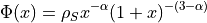
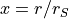

NFW Potential
NFW potential of gNFW need the following parameters:
x_centre, y_centre, ellipticite, angle_pos, alpha, scale_radius_kpc, concentration, z_lens .
The Newtonian (spherical) gNFW potential is:

where  is a redimensionned radius (see Limousin et al. 2008 eq. 1).
corresponds to a regular NFW profile.
Example of lenstool NFW parametrisation:
potential 1
profil 12
x_centre 0.
y_centre 0.
ellipticite 0.
angle_pos 0.
alpha 1.
scale_radius_kpc 30.
concentration 5.5
z_lens 0.2
end
NOTE: If you want to use the generalized NFW profile, you need to prepare the lenstool.tab lookup table with this command:
make table